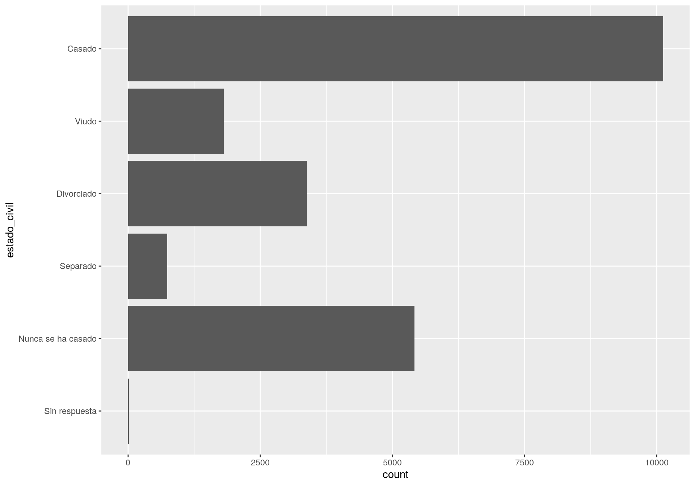
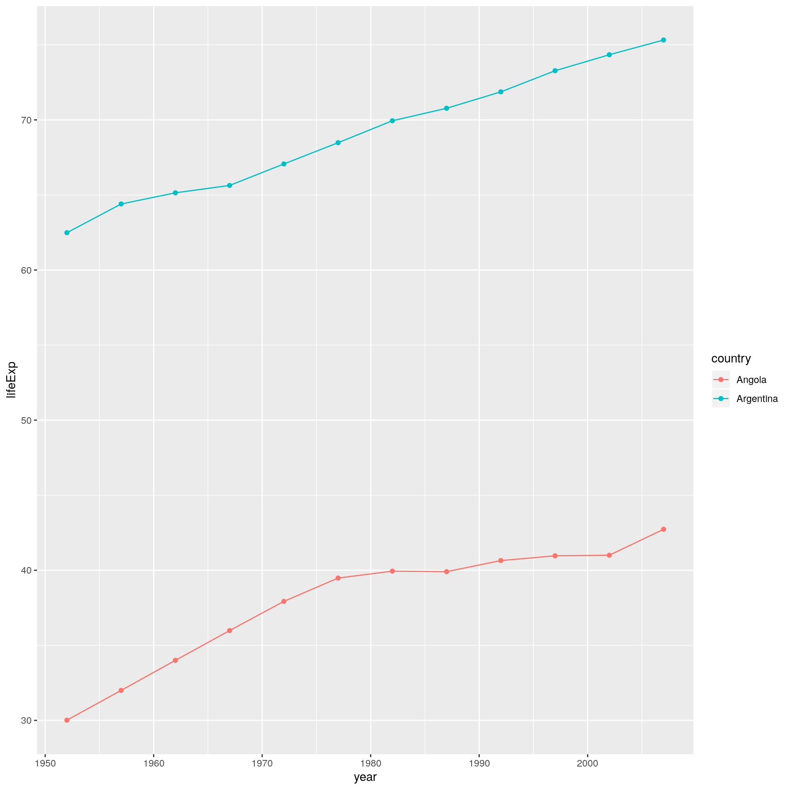

6.2 Práctica Guiada
6.2.1 Ejemplo 2. Gapminder
Construyamos nuestro propio ejemplo con los datos de Gapminder. Para eso, vamos a ver que la manera más cómoda de escribir una shiny app no es en el orden en que aparece el código final.
Al código hay que comerlo de a pedacitos.
- Pensamos qué queremos mostrar
- Escribimos código estático para un caso particular.
- Pensamos qué partes queremos generalizar.
- Armamos una función que tome como parámetros aquello que generalizamos
- Armamos un shiny estático que nos muestre el resultado de la función con parámetros fijos
- Agregamos los inputs en el ui
- reemplazamos los parámetros fijos por los de input en el server
- Agregamos texto y otros elementos ‘cosméticos’
A cada paso vamos armando un código que no falle. De esta forma es más fácil detectar los errores.
library(tidyverse)
library(gapminder)
gapminder <- gapminder
gapminder## # A tibble: 1,704 x 6
## country continent year lifeExp pop gdpPercap
## <fct> <fct> <int> <dbl> <int> <dbl>
## 1 Afghanistan Asia 1952 28.8 8425333 779.
## 2 Afghanistan Asia 1957 30.3 9240934 821.
## 3 Afghanistan Asia 1962 32.0 10267083 853.
## 4 Afghanistan Asia 1967 34.0 11537966 836.
## 5 Afghanistan Asia 1972 36.1 13079460 740.
## 6 Afghanistan Asia 1977 38.4 14880372 786.
## 7 Afghanistan Asia 1982 39.9 12881816 978.
## 8 Afghanistan Asia 1987 40.8 13867957 852.
## 9 Afghanistan Asia 1992 41.7 16317921 649.
## 10 Afghanistan Asia 1997 41.8 22227415 635.
## # … with 1,694 more rows6.2.1.1 1. qué queremos mostrar
- tenemos tres variables que podrían ser agrupadoras: País, continente y año
- y tres variables que puede ser interesante representar: Esperanza de vida, población y PBI per cápita
Podríamos mostrar por ejemplo la serie de tiempo de algún país para alguna variable
6.2.1.2 2. código estático para un caso particular.
gapminder %>%
filter(country == 'Argentina') %>%
ggplot(aes(year, lifeExp))+
geom_line()+
geom_point()
6.2.1.3 3. partes que queremos generalizar.
- El gráfico podría ser para cualquier país (o para un conjunto de países!)
- podríamos elegir qué variable ver
6.2.1.4 4. función que tome como parámetros aquello que generalizamos
graficar <- function(pais, variable){
gapminder %>%
filter(country %in% pais) %>% ## reemplze el == por %in% para que me reciba más de un país.
ggplot(aes_string("year", variable, color= "country"))+ ## Le cambio aes por aes_string para que me reciba el texto del input
geom_line()+
geom_point()
}
graficar(pais = "Argentina", variable = "lifeExp")
graficar(pais = c("Argentina","Angola"), variable = "lifeExp")
6.2.1.5 5. shiny estático con parámetros fijos
ver ejemplo_2_a
- Agregamos los inputs en el ui
Necesitamos agregar dos inputs: País y variable.
Para opciones podemos usar selectize
selectizeInput(inputId, label, choices, selected = NULL, multiple = FALSE, options = NULL)
Podemos crear la lista de opciones de países automaticamente
unique(gapminder$country)[1:10]## [1] Afghanistan Albania Algeria Angola Argentina
## [6] Australia Austria Bahrain Bangladesh Belgium
## 142 Levels: Afghanistan Albania Algeria Angola Argentina ... Zimbabwever ejemplo_2_b
6.2.1.6 7. reemplazamos los parámetros fijos por los de input en el server
ver ejemplo_2_c
6.2.1.7 8. Tuneamos a discreción
Una vez que tenemos un shiny funcionando como queríamos, podemos agregar tags y texto para agregar explicaciones y emprolijar los resultados.
# Headers
# shiny::tags$h1('Nivel 1')
# shiny::tags$h2('Nivel 2')
# shiny::tags$h3('Nivel 3')
# shiny::tags$h4('Nivel 4')
# shiny::tags$h5('Nivel 5')
# shiny::tags$h6('Nivel 6')
shiny::br() # espacio en blancoshiny::hr() # linea horizontalshiny::helpText('texto para ayudas')6.2.1.8 Multiples pestañas
También puede ocurrir que queremos mostrar varios resultados en un mismo shiny. En nuestro ejemplo, podríamos querer mostrar una tabla con los datos.
Para eso podemos usar
tabsetPanelen eluiImaginemos que queremos tener dos tabs: Una con el gráfico, y otra con una tabla de resultados:
Entonces, en el shiny debemos agregar:
mainPanel(
tabsetPanel(type = "tabs",
tabPanel("Gráfico", plotOutput("grafico")),
tabPanel("Tabla", tableOutput("tabla"))
)
)Mientras que en el server debemos generar un nuevo resultado, llamado tabla con los datos
output$tabla <- renderTable({
gapminder %>%
filter(country %in% input$inputPais)
})ver ejemplo_2_d